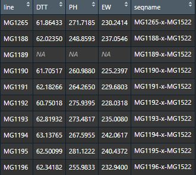

Quickstart
This section briefly introduces some typical examples of GOVS to help users get started quickly. Detailes and other functions of GOVS,please see Tutorial or Reference Manual.
Installation
1. Github install
## install dependencies and GOVS
install.packages(c("ggplot2","rrBLUP","lsmeans","readr","pbapply","pheatmap","emmeans"))
require("devtools")
install_github("GOVS-pack/GOVS")
## if you want build vignette in GOVS
install_github("GOVS-pack/GOVS",build_vignettes = TRUE)
2. Download .tar.gz package and install
Download link: GOVS_1.0.tar.gz
## install dependencies and GOVS with bult-in vignette
install.packages(c("ggplot2","rrBLUP","lsmeans","readr","pbapply","pheatmap","emmeans"))
install.packages("DownloadPath/GOVS_1.0.tar.gz")
Data preparation
GOVS typically started with four types data
- Genotypic data (hapmap format,matrix). SNP rs must coded with pattern "chr[0-9].s/_[0-9]*" (eg: chr1.s_4831, "1" for chromosome, "4831" for locus).
Genotypic data - Phenotypic data (dataframe), first column is lines ID.
 Phenotypic data - Bins data (matrix), each row represents a bin (reconbination fragment) and each column represents a progeny, contents represent the origins of the bins tracing back to the parental lines.
Bins data - Bins information data (dataframe) corresponding to bins data, consists of five columns (bin ID, chromsome, start position, end position and length of each bin).

Bins information data
NOTE: The header of bins, the first column of phenotype and the header of genotype must be unified, we recommend unify these ID with patrental ID.
Run GOVS
## Not run !
## load test data
# Phenotypic data:
data(phe)
# genomic data:
data(MZ)
# bins data:
data(bins)
# bins information:
data(binsInfo)
# example for one-stop solution for GOVS
GOVS_res <- GOVS(MZ,pheno = phe,trait = "EW",which = "max",bins = bins,
binsInfo = binsInfo,module = "DES")
Output of GOVS:
A list or several files (if output is defined).
$GOResGenome optimization results.$virtualGenomeA matrix involves of three optimal virtual genomes.$statResA data frame regarding statistics results of virtual simulation.LinesLinesBins(#)The number (#) of bins that a line contributed to the simulated genome.Bins(%)The number of bins that a line contributed accounting for the proportion (%) of simulated genome.Fragments(%)The total length of genomic fragments that a line contributed accounting for the proportion (%) of simulated genome.phenotypeThe phenotypic value of the corresponding lines or their offspring.phenotypeRankThe phenotype rank.Cumulative(%)The cumulative percentage of fragments contributing to the simulated genome.
Statistic summary of GOVS
Run genotytpe-to-phenotype prediciton (rrBLUP)
This function performs genotpye-to-phenotype prediciton via ridge regression best linear unbiased prediction (rrBLUP) model (Endelman, 2011). The inputs is genotypeic data.
## Not run!
## load hapmap data (genomic data) of MZ hybrids
data(MZ)
## load phenotypic data of MZ hybrids
data(phe)
## pre-process for G2P prediction
rownames(MZ) <- MZ[,1]
MZ <- MZ[,-c(1:11)]
MZ.t <- t(MZ)
## conversion
MZ.n <- transHapmap2numeric(MZ.t)
dim(MZ.t)
## prediction
idx1 <- sample(1:1404,1000)
idx2 <- setdiff(1:1404,idx1)
predRes <- SNPrrBLUP(MZ.n,phe$EW,idx1,idx2,fix = NULL,model = FALSE)
Construct bin map
IBD map was constructed of contributions from the parents onto the progeny lines discribed by Liu et al. (Liu et al., 2020) based hidden Markov model (HMM) (Mott et al., 2020) . Here we take chromosome-10 of one offspring as an example.
## load example data
data(IBDTestData)
## compute rou from genetic position
rou = IBDTestData$posGenetic
rou = diff(rou)
rou = ifelse(rou<0,0,rou)
## constract IBD map of chr10 for one progeny
IBDRes <- IBDConstruct(snpParents = IBDTestData$snpParents,
markerInfo = IBDTestData$markerInfo,
snpProgeny = IBDTestData$snpProgeny,q = 0.97,G = 9,rou = rou)
Output of IBDConstruct:
A list regarding constructed bin map.
binResults of IBD analysis, each row represents a bin fragment.binsInfoData frame, including bins index, start, end, length of bins locus.
Visualization of IBD map results
## load example data
data(IBDTestData)
## compute rou from genetic position
rou = IBDTestData$posGenetic
rou = diff(rou)
rou = ifelse(rou<0,0,rou)
## constract IBD map of chr10 for one progeny
IBDRes <- IBDConstruct(snpParents = IBDTestData$snpParents,
markerInfo = IBDTestData$markerInfo,
snpProgeny = IBDTestData$snpProgeny,q = 0.97,G = 9,rou = rou)
## plot
# color
color <- c("#DA053F","#FC0393","#C50F84","#D870D4","#DCA0DC","#4A0380",
"#9271D9","#0414FB","#2792FC","#4883B2","#2CFFFE","#138B8A",
"#42B373","#9BFB9C","#84FF2F","#566B32","#FED62D","#FD8A21",
"#F87E75","#B01D26","#7E0006","#A9A9A9","#FFFE34","#FEBFCB")
names(color) <- 1:24
# parent label
parentInfo <- c("5237","E28","Q1261","CHANG7-2","DAN340","HUANGC","HYS",
"HZS","TY4","ZI330","ZONG3","LX9801","XI502","81515",
"F349","H21","JI853","JI53","LV28","YUANFH","SHUANG741",
"K12","NX110","ZONG31")
names(parentInfo) <- 1:24
# plot
binsPlot(IBDRes,color,parentInfo,24)
Visualization of overall bins data
Take chromosome-1 and first 200 progeny as an example.
## load data
data(bins)
data(binsInfo)
## color
color <- c("#DA053F","#FC0393","#C50F84","#D870D4","#DCA0DC","#4A0380",
"#9271D9","#0414FB","#2792FC","#4883B2","#2CFFFE","#138B8A",
"#42B373","#9BFB9C","#84FF2F","#566B32","#FED62D","#FD8A21",
"#F87E75","#B01D26","#7E0006","#A9A9A9","#FFFE34","#FEBFCB")
mosaicPlot(bins = bins,binsInfo = binsInfo,chr = 1,resolution = 500,
color = color,
list = colnames(bins)[1:200])
References
Endelman, J. B. (2011). Ridge regression and other kernels for genomic selection with R package rrBLUP. The plant genome, 4(3)
https://doi.org/10.3835/plantgenome2011.08.0024
Mott, R., Talbot, C. J., Turri, M. G., Collins, A. C., & Flint, J. (2000). A method for fine mapping quantitative trait loci in outbred animal stocks. Proceedings of the National Academy of Sciences, 97(23), 12649-12654.
https://doi.org/10.1073/pnas.230304397
Liu H J, Wang X, Xiao Y, et al. (2020) CUBIC: an atlas of genetic architecture promises directed maize improvement[J]. Genome biology, 21(1): 1-17. https://doi.org/10.1186/s13059-020-1930-x